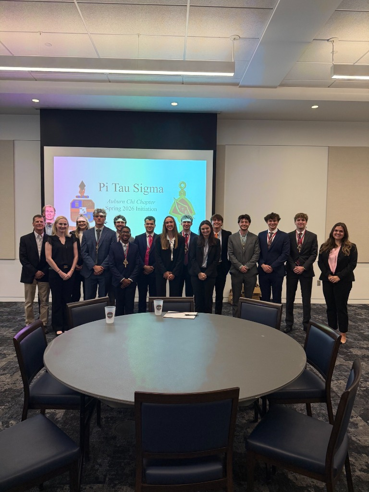
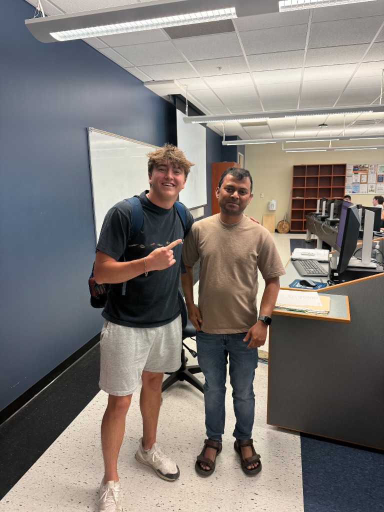
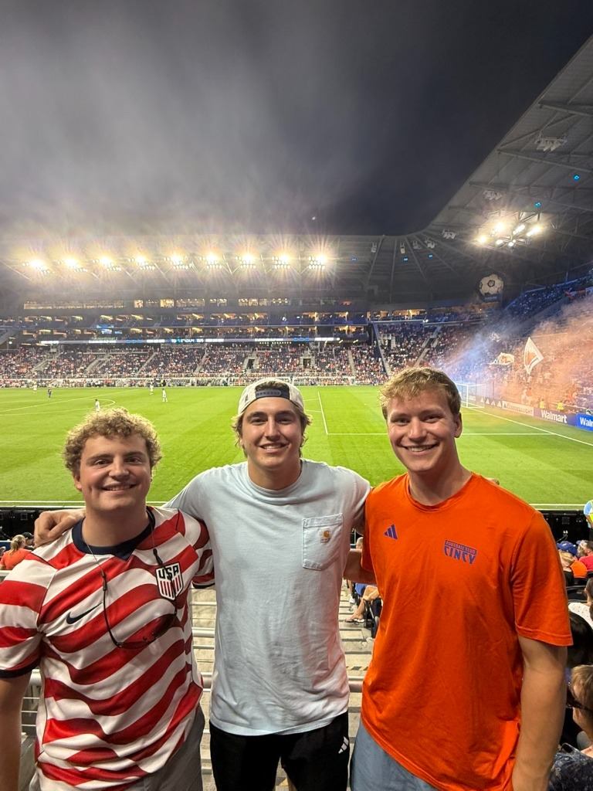

Welcome to my Engineering Portfolio
Showcasing CAD Part Drawings|
Hello! I am a Junior studying Mechanical Engineering at Auburn University. I have recently completed an internship at LSI Industries this past summer and am currently on the hunt for my next opportunity to learn in the real world of engineering. This portfolio compiles the technical drawings, presentations, demonstrations, coureswork, and more that I have completed during my engineering journey.
Please explore the tabs above to inspect my academic coursework, industrial experience, and cataloged technical files. If you are interested in reaching out, please contact me below!
Get in Touch
About Me
My engineering background, technical interests, and leadership roles.
Driven by Structural Principles & Design
I was born and raised in Dayton, Ohio by my loving family. Growing up, I played just about every sport there was in my small town and always enjoyed things like legos and small arts and craft projects. I continued my passion for sports and projects through high school as I played football, baseball, basketball, and track while working on personal projects such as paintings, tables, and corn hole sets. Growing up, I always knew I wanted to become an engineer as I looked up to my grandfather who constantly fixed things for people. Then, in high school I took an "Intro To Engineering" class where we created robots that had to complete specific tasks. This class confirmed my decision to study mechanical engineering in college. With my grades and test scores, I was lucky to receive a scholarship to attend Auburn University which I quickly accepted.
At Auburn University, I have explored a variety of disciplines within mechanical engineering while working to identify the areas that most interest me. In addition to excelling academically (see the "Academics" tab), I am an active member of ASME, the American Society of Mechanical Engineers at Auburn University, where I participate in networking events, design nights, professional development opportunities, and more. I was also selected for Auburn's chapter of Pi Tau Sigma, the international mechanical engineering honor society recognizing the top 25% of mechanical engineering students. Through Pi Tau Sigma and its collaboration with ASME, I have expanded my professional network and gained access to valuable resources that have supported my growth as an engineer. During the summer of 2026, I had the opportunity to intern with LSI Industries (see the "Experience" and "Projects" tabs), where I gained hands-on experience in design and manufacturing. This experience allowed me to apply concepts learned in the classroom to real-world engineering challenges while further developing my technical and professional skills.
Looking ahead, I am eager to take on new engineering opportunities that challenge me to grow and expand my perspective of the industry. Whether through internships, research, or design projects, I am committed to continuously learning and applying my skills to real-world problems. My goal is to build a career where I can contribute to innovative engineering solutions while continuing to develop as both an engineer and a person.
Core Tools



Leadership & Roles
Key coordination and project leadership tasks completed during my studies.
Advised, assisted, and organized a group to plan and execute a dedicated luncheon for all male graduating seniors and their fathers, coordinating event programming, logistics, and community outreach.
Led design reviews and concept walk-throughs for my projects, clearly communicating the engineering methodology, decisions, and code. Equipped team members with the documentation needed to troubleshoot, modify, and maintain the designs moving forward (Documents in "Projects" tab).
Served as group leader directing a team using SolidWorks to design and structurally optimize a load-bearing bracket, achieving 1st place by supporting the highest weight capacity (78 lbs).
Academic Profile
University degree summary, grades, and outcomes from core engineering courses.
Bachelor of Mechanical Engineering
Relevant Completed Courses
Completed coursework and grades representing foundational mechanical engineering competencies.
Mechanical Engineering Statics
Study of force systems, equilibrium of particles and rigid bodies, structural analysis of trusses, friction, centroids, and moments of inertia.
Kinematics and Dynamics
Kinematics and kinetics of particles and rigid bodies. Kinematic analysis of linkages, gears, cams, planar motion, work-energy, and momentum methods.
Thermodynamics I
Properties of pure substances, first and second laws of thermodynamics, entropy, power cycles, and refrigeration cycles.
Manufacturing Technology Lab
Introduction to manufacturing processes and laboratory safety. Focuses on manual machining, metrology, CNC programming, and fabrication by providing a semester-long project which requires weekly use of manual mills and lathes (See "Projects").
Computer Aided Engineering
Study of 3D parametric modeling, assembly design constraints, and stress analysis of mechanical components using CAD/CAE tools, specifically SolidWorks and MatLab. Class also included a lab where a PVC pipe fusion clamp machine was designed as a team (See "Projects").
Relevant Current Courses
Mechanical engineering courses currently in progress.
Concepts of Mechanical Design
Study of safety factors, stress concentration, static and fatigue failure analysis, and design constraints of shafts, bearings, and fasteners.
Fluid Mechanics
Study of fluid statics, fluid kinematics, conservation of mass, momentum and energy, internal viscous flow, pipe flow, and boundary layer theory.
Thermodynamics II
Advanced vapor and gas power cycles (Rankine, Otto, Diesel, Brayton), refrigeration, gas mixtures, psychrometrics, and combustion reactions.
Mechanics of Materials
Analyses of stress and strain, deformation under axial loading, torsion of shafts, bending deflection of beams, shear stresses, and pressure vessels.
Professional Experience
Positions I have held, detailing my tasks, engineering solutions, and achievements.
Engineering Intern
LSI Industries • Cincinnati, OH
Completed an intensive multi-disciplinary engineering internship at LSI Industries headquarters, driving product design, automation, R&D testing, and production operations:
- Mechanical Design: Redesigned die-cast aluminum end caps for the LAW2 line with integrated mechanical stops and redesigned screw holes to eliminate a second manufactured cover (-$1.34/unit), engineered CNC fixture subplates, and modeled sheet metal light shields in Autodesk Inventor.
- Design Automation (iLogic): Developed an automated commercial lighting pole generator using 8,000+ lines of custom iLogic code and AI tools, integrating with Autodesk Vault PDM and JD Edwards ERP (600% efficiency boost).
- R&D & Rapid Prototyping: Managed 11 design iterations of the LAW2 end cap, executing 3D-print fit-up validation and physical mount testing to verify real-world assembly tolerances.
- Manufacturing & Quality: Gained direct shop-floor visibility across pole and packaging plants, applying NADCA die-casting standards, draft angles, and standard production drawing notes.
- Electrical Integration: Hands-on assembly and wiring of Velocity product family power/control modules, studying electrical schematics to build systems integration fluency.
- Operations & ECNs: Conducted Engineering Change Notice (ECN) reviews, shadowed project managers on production scheduling, and participated in daily agile standups.
1. Mechanical Engineering
Applied core mechanical design principles using Autodesk Inventor to design components, create manufacturing drawings, and refine assemblies.
- LAW2 End Cap Redesign: Redesigned die cast aluminum end caps to incorporate a physical stop preventing gasket over-compression, and redesigned screw holes to eliminate a second manufactured cover (-$1.34/unit cost reduction) (See in "Projects" tab).
- CNC Subplate Design: Redesigned a heavy-duty subplate for CNC machining fixtures, focusing on developing precise drawings, identifying datums, and ensuring accurate positioning.
- Sheet Metal Design: Modeled a 4-sided light shield in Inventor. Used sheet metal manufacturing standards to calculate bend allowances and generate flat-pattern drawings with fold-lines (See in "Projects" tab).
2. Electrical Engineering
Gained practical, hands-on exposure to electrical sub-assemblies and wiring schematics.
- Velocity Family Modules: Hands-on assembly of several power and control modules from the Velocity product family.
- Systems Integration: Studied electrical schematics to understand how individual electronic components interface and function together to achieve optimal performance.
- Skills Developed: Overcame previous hesitation toward electrical engineering by building confidence in hardware assembly, wiring, and circuit pathing.
3. R&D & Product Development
Supported the product development lifecycle through iterative design, physical testing, and prototype validation.
- Iterative Optimization: Managed 11 design iterations of the LAW2 end cap, systematically adjusting CAD models based on feedback regarding manufacturing constraints, casting parameters, and part costs.
- Rapid Prototyping: Utilized 3D-printing to prototype and test iterations of the end cap, validating physical tolerances and fit-up before final production tooling was cut.
- Physical Verification (Mount Test): Assisted with physical mount testing, identifying discrepancies between CAD models and actual physical assemblies to emphasize mock-up testing importance.
4. Manufacturing Engineering
Worked directly with manufacturing processes and constraints to optimize designs for production (Design for Manufacturability).
- Shop Floor Operations: Spent time in the pole plant and packaging plant picking parts and painting fixtures, gaining direct visibility into the downstream manufacturing flow.
- Casting Constraints: Learned draft angle standards (2.5°–3.8°), casting tolerances, and thermal shrinkage allowances during the design of cast components.
- Drawing Standards: Created production drawings using industry-standard ASME symbols, clear views, and standard sheet metal notes.
5. Design Automation & Process Engineering
Designed automation workflows and created systems to standardize repetitive engineering tasks.
- iLogic/Code Development (The Pole Generator): Developed a parameter-driven pole generation tool in Autodesk Inventor using 8,000+ lines of custom iLogic code in collaboration with AI tools (See in "Projects" tab).
- Data Integrity (PDM/ERP Integration): Connected the automation system with Autodesk Vault for document control and JD Edwards for ERP/BOM synchronization.
- Process Standardization (SOP): Authored and presented a Standard Operating Procedure explaining generator backend architecture and maintenance guidelines for clean ownership transition.
6. Operations & Administration
Learned how engineering departments coordinate projects, manage changes, and interact with the broader business.
- Engineering Change Notices (ECN): Performed ECN reviews, learning how to document revisions properly and query change logs to trace why historic designs were altered.
- Project Management Shadowing: Shadowed a project manager to learn about project scoping, team scheduling, and how PMs align production and engineering resources.
- Agile Standups: Participated in morning team meetings to track project paths, discuss obstacles, and practice speaking and presenting to senior engineers.
- Vendor Relations: Attended technical "Lunch-and-Learn" seminars with external suppliers, gaining insight into procurement and business dynamics.
Survey Engineer Intern
Brumbaugh Engineering & Surveying • West Milton, OH
- Collaborated with multiple crews/teams to survey and prepare various construction sites to ensure precision during excavation around the Midwest (Ohio, Kentucky, and Indiana).
- Shadowed senior engineers using AutoCAD to turn surveying data into 2D and 3D maps of job sites.
Engineering Projects
Detailed project case studies featuring design methodology, CAD models, calculation reports, and project files.